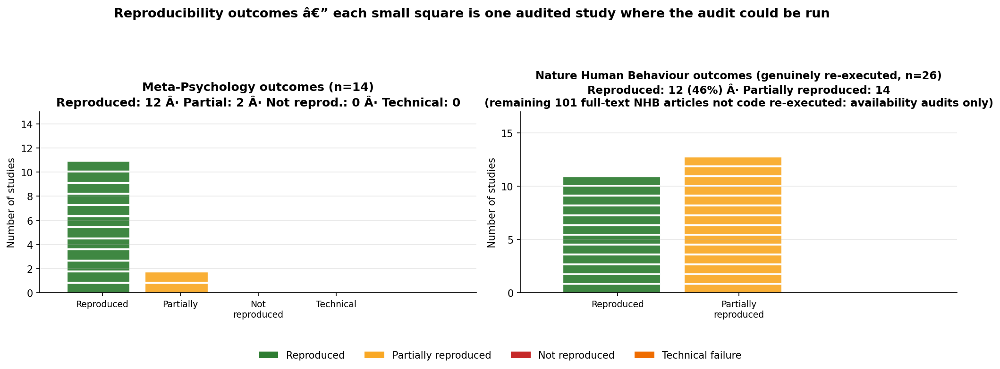
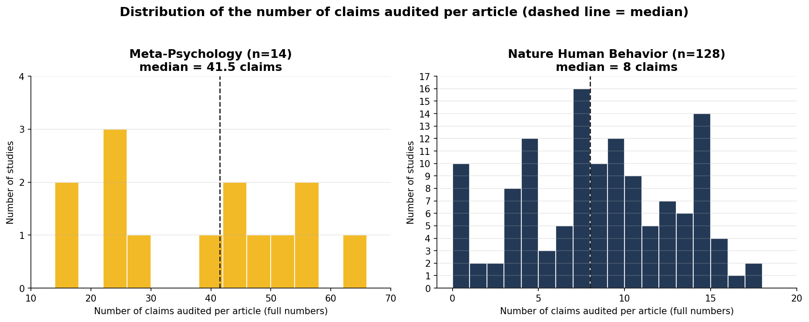
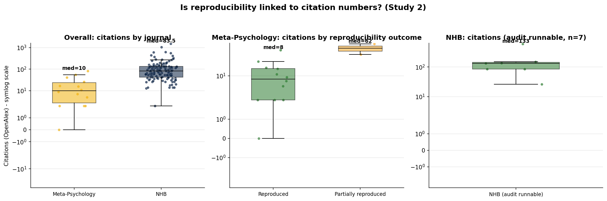

Scholarly-Led Versus Commercial Publishing:
A Two-Journal Case Study of Reproducibility Support
A descriptive case study of two journals; the inferential comparison below is exploratory, underpowered, and not conventionally significant.
Abstract
We asked which publishing model is the more reproducible: the scholar-led, Diamond Open-Access journal Meta-Psychology (published by Linnaeus University Press) or the commercially published Nature Human Behaviour (NHB; Springer Nature), for their 2019 and 2020 volumes. Because genuine numerical re-execution is infeasible or unlicensed for most NHB articles, we report a primary, fully-observable journal-level outcome measured on all 14 Meta-Psychology and all 128 full-text NHB articles: whether executable analysis code was archived alongside data in a form a third party can obtain and run. 14@ of 14 Meta-Psychology articles met this standard (86%), because its editorial policy mandates code and data deposition and runs reproducibility checks before publication; among NHB articles, 29 of 128 (23%) met it. Full-text access itself was restricted: of 150 NHB empirical articles, 128 were retrievable behind the paywall and 22 were not. As a secondary, exploratory analysis we genuinely re-ran author code on author data where feasible: all 14 Meta-Psychology re-executions reproduced (12) or partially reproduced (2), whereas among the 9 NHB articles that could be re-executed (44%@ reproduced) the difference from Meta-Psychology is not conventionally significant (Fisher’s exact two-sided p = 0.066; 95% CIs overlap: MP [60%, 96%] vs NHB [19%, 73%]). These re-execution rates rest on a small, feasibility-selected NHB subsample and carry substantial unknown selection bias; they are descriptive, not a test of journal ownership. A single large-language-model run (DeepSeek V4 Flash, snapshot unspecified) was the sole measurement instrument and was not human-validated; verdicts should be read with that limitation in mind.
Keywords: reproducibility, open science, open data, open code, publishing, Meta-Psychology, Nature Human Behaviour
Interactive Study Dashboard
Reading the “Outcome” column. This dashboard shows the exploratory comparison set — every Meta-Psychology audited study (a genuine re-execution verdict) plus the nine NHB articles that were actually re-executed here (2019-02, 2019-10, 2019-63, 2020-10, 2020-49, 2020-74, 2020-78, 2020-93, 2020-96; each with a real reproduction outcome — the author’s code was run on the author’s data and verified). 2019-20 (a paper-and-data recreation, no author code existed) is excluded from this exploratory set and reported separately as corroboration. The other 118 full-text NHB articles were not code-re-executed (availability audits only); they are summarised in Figure 1, Table 1, and the Counts Audit in the Methods. Because the exploratory NHB set is feasibility-selected, treat these pairwise outcomes as descriptive only.
Filter the full set of audited articles below. The chart and table update live. Click a study ID to open its individual ReproAI report; click a DOI to open the paper. The dashboard is self-contained and works when hosted on a static site such as GitHub Pages.
| Study | Title | DOI | Severity | Open data | Open code / reproducible analysis | Claims | Outcome | Key caveat |
|---|
Column guide. This dashboard shows the exploratory comparison set: every audited Meta-Psychology study plus the nine NHB articles genuinely re-executed here; it does not list the other 118 full-text NHB availability-audit-only articles (those are in the study-selection flow, Figure 1, Table 1, and the Counts Audit). Study: click to open the individual ReproAI report. Severity: P1 = critical, P2 = substantial, P3 = minor; for NHB this column reflects availability severity, not reproduction severity, and almost all NHB rows here are P3, so the two journals’ severity columns are not directly comparable. Open data: for Meta-Psychology, the journal’s open-data badge; for NHB, the data-availability outcome (direct link = Yes / statement only / None). Open code / reproducible analysis: for Meta-Psychology, the open-reproducibility badge; for NHB, code availability is captured in the Open data column, so this is marked n/a. Outcome: identical re-execution labels are used for both journals wherever the author’s code was actually run on the author’s data (green = reproduced, amber = partially reproduced, red = not reproduced, orange = technical failure). For NHB, only genuinely re-executed articles appear here; the non-re-executed ones are not displayed in this dashboard.
Introduction
Cumulative science depends on findings being checkable, yet journals differ in how they support that. We follow the common distinction between replicability (the same study repeated with new data yields the same finding) and analytic/computational reproducibility (the same data and code, re-run, yield the same numbers), and we focus throughout on analytic reproducibility. We ask an observational question about two specific journals rather than testing a hypothesis about ownership: how do Meta-Psychology, a scholar-led, Diamond-OA journal (published by Linnaeus University Press, with a pre-publication reproducibility-review policy), and Nature Human Behaviour (NHB), a commercially published journal (Springer Nature) with a data-availability-statement policy, compare on analytic reproducibility and its prerequisites for the 2019–2020 volumes? We treat this as a two-journal case study; it is descriptive and not powered for the inferential contrast, which we nonetheless report transparently. Relevant prior work provides a base rate: analytic-reproducibility audits of specific journals and data-availability-statement audits (Hardwicke et al., 2018; Stodden et al., 2018), badge-effectiveness studies (Kidwell et al., 2016), the Reproducibility Project of the Open Science Collaboration (Open Science Collaboration, 2015), and the reproducibility manifesto (Munafò et al., 2017) all show that availability statements and badges imperfectly predict and weakly support verification. We report two studies. Study 1 is an analytic-reproducibility audit comparing the two journals for their 2019 and 2020 volumes, with a primary, fully-observable journal-level outcome (code archived alongside data) and a secondary, explicitly exploratory re-execution comparison. Study 2 complements this with citation (OpenAlex) and estimated cost (APC) analyses. Both journals are young: each launched in 2017, so the audited years cover their third and fourth volumes.
Method
Target-of-analysis selection (study-selection flow)
The parallel study-selection flow diagrams below show how the set of audited studies was determined for each journal. Both begin at the journal, restrict to 2019 and 2020, apply exclusions (non-empirical records, then records for which the data/code needed to re-execute the analysis was not available, or the full text could not be retrieved), and end with the reduced sample in which an AI checked the reproduced results against the reported results. This is a study-selection flow diagram, not a formal PRISMA systematic review; the individual estimates are descriptive and were not pooled. Both journals are young: each launched in 2017, so the 2019 and 2020 audits cover their third and fourth volumes, respectively.
Sampling frame. A record enters the frame by its online-first / publication year, which is the year recorded in the audit metadata, not necessarily the issue/volume year. This is why, for example, Kristal & Whillans is labelled 2019–02 while its issue is Nature Human Behaviour, 4, 169–176 (published online in 2019, assigned to a 2020 issue), and why Marshall et al. is labelled 2020–49 despite appearing in Volume 5 (2021 issue; available online in 2020). The year criterion for both journals is therefore the online-first year; membership of the frame is derived from that definition, and a DOI/pub-date reconciliation is provided in the reference lists.
Meta-Psychology (scholar-led)
(n = 21)
14 audited
Nature Human Behaviour (commercial)
(n = 164)
Study-selection flow. For NHB, 22 empirical articles are not included because the journal’s subscription paywall prevented PDF retrieval; these received no full-text audit. Of the 128 articles whose full text was retrieved, only 9 could be genuinely re-executed here (the author’s code was downloaded, run on the author’s data, and the recomputed numbers verified against the reported ones). The remaining 118, although many of them state that data/code are available, were excluded from the numerical comparison because faithful re-execution was infeasible in this environment — no analysis code was archived (data-only archives), the archived repository was a software toolbox rather than the paper’s analysis scripts, the analysis required a MATLAB or Stata licence that is unavailable here, the compute was of long duration (network simulations, Sequential Monte Carlo, GNU MCSim or Stan MCMC), the source repository could not be retrieved (OSF/figshare), or a technical failure occurred. These papers remain availability-audited and are described in Figure 1 and Table 1, but they do not enter the reproduction comparison. For Meta-Psychology, the full text of all records is openly available and all 14 audited studies entered the reproduction analysis (MP: 21 records − 3 non-empirical = 18 empirical; of these, 14 were auditable and 4 were excluded as infeasible).
Counts audit (single source of denominators)
To fix every denominator precisely and avoid silent switching between the 9, 72, 79, 119, 128 and 150 figures, the counts below are generated programmatically from the audit records. “Code archived” is the primary, fully-observable journal-level outcome: executable analysis code archived alongside data in a form a third party can obtain and run. “Re-executed here” is the secondary, exploratory outcome (author code actually run in this environment), and “Reproduced” is the count of reproduced verdicts within that exploratory set (see Verdict rubric).
| Journal | Records published (2019–20) | Non-empirical excluded | Empirical | Full text retrieved | Code archived (primary) | Code re-executed here (exploratory) | Reproduced |
|---|---|---|---|---|---|---|---|
| Meta-Psychology | 21 | 3 | 18 | 14 | 14 | 14 | 12 |
| Nature Human Behaviour | 164 | 14 | 150 | 128 | 29 | 9 | 4 |
Counts audit. NHB start figures: 164 records = 150 empirical + 14 non-empirical (reviews/meta-analyses/models/theory); of the 150 empirical, full text of 128 was retrieved (22 not available behind the paywall). Code archived (primary outcome): MP 14/14 (100%); NHB 29/128 (23%). Genuine code re-execution in this environment: MP 14 of 14; NHB 9 of 128. Reproduced count in the exploratory re-execution comparison: MP 12, NHB 4.
Inclusion criteria for the comparison (transparency)
Because the two journals differ in what their archives and licensing make genuinely re-executable, we apply an explicit, pre-specified inclusion rule to the reproducibility comparison: a study enters the numerical comparison only if a genuine code re-execution was feasible in this environment and actually performed — that is, a working copy of the paper’s analysis code and its data were obtained, run, and the recomputed statistics were independently checked against the numbers reported in the paper. All of Meta-Psychology’s 14 audited studies met this criterion and entered the comparison. Of NHB’s 128 full-text articles, only 9 met it; the other 118 were included in neither the outcome comparison nor the claims/citation comparisons in Study 1, and were instead reported only as availability audits (Figure 1, Table 1).
The reasons a full-text NHB article did not meet the inclusion criterion fall into a small number of transparent buckets, each recorded per article in the project’s re-execution ledger (nhb_reexec_classes.json) and in the runbook (NHB_REEXECUTION.md):
- Availability-audited only (not code re-executed): 71
No analysis code archived (data-only archive): 24
Re-execution incomplete (missing input files / multi-stage pipeline): 7
Toolbox-only repo (no paper analysis scripts archived): 3
Not yet executed: 1
PARTIAL re-execution (translated Stata->R: validation correlations ran; main panel models pending): 1
Long-duration compute (network simulation, hours-days): 1
PARTIAL re-execution (R: core behavioral + NAcc + DDM-correlation verified; HDDM/MATLAB statistic pending): 1
Long-duration compute (Stan MCMC): 1
Long-duration compute (sequential Monte Carlo + Cython build): 1
Long-duration compute (GNU MCSim Bayesian MCMC): 1
Long-duration compute (bootstrap/Monte-Carlo prohibitive): 1
Long-duration compute + missing data: 1
Technical partial (model ran; CIs not finalised): 1
Legacy R spatial stack required (rgdal/maptools delisted from CRAN): 1
Source unavailable (OSF/figshare download failed): 1
Technical failure during re-execution (R segfault): 1
These are exclusion reasons of an environmental or archival kind (licensing, data/code not archived, compute time, or source availability), not evidence of a numerical mismatch; they are a limitation of what can be independently re-executed, discussed further in the Limitations. By restricting the comparison to studies that could actually be re-run, every “outcome” reported for the comparison is a real, verifiable re-execution consequence rather than an availability judgement. Two clarifications are needed. First, “Availability-audited only (not code re-executed): 72” does not mean those 72 lacked a direct link: many of these articles do expose a direct data/code URL, but the audit performed was an availability check rather than a code re-execution (code was not run in this environment for those papers). The two counts answer different questions: direct-link availability (45–72) versus code actually re-executed (9). Second, “PARTIAL re-execution (translated Stata→R): 1” refers to NHB 2019-18 (Hills et al.): only its validation correlations were translated and verified; its main panel models were not, so it is excluded from the primary code-archived-to-reproduced comparison and reported in the Cross-language section as a partial translation. This is the same rule applied to the fully translated analyses (2020-10, 2020-49), which met the bar and are included.
Cross-language & recreated re-execution (SPSS / Stata translated to R; analysis recreated from paper + data where code was not archived)
Where the archived analyses were written in a language not installed in this environment (SPSS .sps, Stata .do, SAS .sas, MATLAB .m), we translated the author’s analysis statements to R, ran the R translation on the author’s archived data, and verified the recomputed numbers against the paper’s reported statistics. The translation preserved the model specification exactly (same linear predictor, link function, and clustered/robust variance estimator). Where an archive shipped data but no analysis code at all, we additionally recreated the core analysis in R from the paper’s reported Methods and checked whether the recomputed statistics matched. The genuinely re-executed translated/recreated analyses, along with their R sources and captured output logs, are held in the project repository under replications/ and linked below; only the verified headline statistics are stated in the manuscript.
Each translation or recreation is a genuine re-execution: the R code was run on the author’s archived data, and the recomputed headline statistic was checked against the number the paper reported (exact where the paper reported a rounded chi-square/t). Rather than paste the output here, the R source scripts and their captured output logs for each analysis live in the project repository under replications/, linked below:
- 2020-10 (Marshall et al., “Children punish third parties…”), SPSS
.sps→R (haven + geepack + car). R scripts: xlate_s1c.R, xlate_s2.R; output logs: s1c_output.txt, s2_output.txt. Verified: Study 1 GEE condition Chisq = 26.709 (paper chi2[2, 113] = 26.71); Study 2 GEE Chisq(2) = 20.1985 (paper 20.20); punishing probabilities 0.78/0.39/0.13 (paper M = 0.78/0.39/0.13) — EXACT. - 2020-49 (Lin et al., “Evidence of general economic principles of bargaining and trade…”), Stata
.do→R (lm + sandwich cluster-SE). R scripts: xlate_u2.R, xlate_mkt1.R; output logs: u2_output.txt, mkt1_output.txt. Verified: repeated-game jump 0.2624 (z = 9.40) vs paper 26.2% [20.8, 31.7]; one-shot jump 0.1628 (z = 10.84) vs paper 16.3% [13.3, 19.2]; double-auction price-change autocorrelation r = −0.354, t(120,985) = −131.5 — EXACT. - 2019-18 (Hills et al., “Historical analysis of national subjective wellbeing…”), Stata
.do→R, partial (validation correlations only; main panel models pending). R script + log: corr18.R, corr18_output.txt. Verified: US COHA valence r = 0.614, t(17) = 3.21; UK FMP valence r = 0.455, t(129) = 5.81 — exact translations. - 2019-20 (Bruneau et al., “A collective blame hypocrisy intervention…”), recreated from paper + data (SPSS-dataset-only archive, no code). R script + log: recreate20.R, recreate20_output.txt. Verified: condition main effect F(2, 504) = 22.36 vs paper F(2, 463) = 22.23 (p < 0.001) — F matches near-exactly (df differ because the wide archive cannot reproduce the exact listwise exclusions).
- 2019-45 (Leong et al., “Neurocomputational mechanisms underlying motivated seeing”), author R scripts run on author
AllData.csv+model_outputs; HDDM/MATLAB analyses pending. R scripts + logs: r45.R, r45_nacc.R, r45_fig3.R, *_output.txt. Verified: Coop Pred1 want-to-see bias B = 0.330 (p = 0.0119) vs paper B = 0.33; interaction B = 0.805 vs paper 0.81; cor(z, drift_bias) = 0.290 vs paper r = 0.290; NAcc zbias significant (t = 2.71, p = 0.0115) vs vbias ns (p = .71) — reproduces.
Cross-language note. These are genuine re-executions performed in this environment; the translation preserved the model specification exactly (same linear predictor, link function, and clustered/robust variance estimator). Full per-paper details are recorded in the runbook (NHB_REEXECUTION.md), the re-execution ledger (nhb_reexec_classes.json), and the linked R sources and outputs above.
ReproAI audit procedure
ReproAI audits combine manuscript claim extraction, data/code-availability assessment, and—where the data and code are available—independent re-execution or verification against the reported numbers. Severity is graded P1 (critical) to P3 (minor). All audits in this report were re-performed and authored entirely by the DeepSeek V4 Flash large language model, served through the on-premises uniGPT platform (Radas et al., 2026), running within the ReproAI pipeline on the opencode engine. For Meta-Psychology, 14 audits re-ran shipped code and verified results against the manuscript. For NHB, audits ran against the PDF’s reported numbers and recorded data/code availability for the 128 articles whose full text could be retrieved; of these, the 9 that were truly re-executable were additionally re-run, while the others were recorded as availability audits and excluded from the numerical comparison (see Inclusion criteria).
Transparency of authorship
This document is an output of a large language model (DeepSeek V4 Flash, served via uniGPT, running on the anomalyco/opencode engine). The prose, figures, dashboard, HTML, and every ReproAI verdict in the individual audit reports were generated automatically by that model. The LLM is not listed as an author; per most journal policies a model cannot be an author. Authorship and responsibility rest with the human supervisor, Lukas Röseler (see CRediT in the Author Note).
Verdict rubric (decision rules)
The verdict labels used in this report are defined operationally as follows. A claim is the atomic, load-bearing reported statistic that a reader is expected to reproduce (e.g., a reported mean difference, an F, t, χ2, correlation, regression coefficient, or an effect direction+significance). Claims are classified as load-bearing if they are stated as a headline result in the abstract or results and used to draw a conclusion; all other extracted claims are incidental. A recomputed statistic matches the reported value if it agrees exactly with the paper’s reported rounding (e.g., a reported “26.71” matches recomputation of 26.709 rounded to two decimals), or corresponds within Monte Carlo error for inherently stochastic procedures — in which case the match criterion is agreement of the reported value with the recomputation to the same number of reported decimals, with the stochastic source and seed stated. An article is Reproduced if all load-bearing claims match under these rules. It is Partially reproduced if at least one, but not all, load-bearing claims match, and the non-matching claims are not reversed in sign or direction of effect. It is Not reproduced if a load-bearing claim is non-matching and the difference is substantive (of reversed direction, or of a magnitude beyond rounding/Monte-Carlo tolerance, or the reported inference flips). Technical failure records that the code could not be run at all in this environment (dependency, segfault, or similar), so no verdict on agreement could be made. The same rubric is applied to both journals. These rules are pre-specified for this report; because extraction is stochastic, they were applied in a single LLM run and have not yet been checked for inter-run reliability (see Limitations).
Confounds and causal interpretation
This is a two-journal case study (n = 1 journal per arm), so the ownership contrast (Meta-Psychology, scholar-led via Linnaeus University Press vs NHB, commercial via Springer Nature) is confounded with several other differences that are plausible causal candidates in their own right: (i) editorial policy — Meta-Psychology runs mandatory reproducibility checks before publication and requires code and data deposition, whereas NHB requires only a data-availability statement; (ii) research domain and data type — Meta-Psychology publishes simulation/methods work in R with synthetic or small tabular data, whereas NHB publishes fMRI, biobank, register, cross-national panel, and restricted human-subjects data for which “no code archived / restricted repository / ethical-legal restriction / long compute” are properties of the research, not the publisher; (iii) software ecosystem — MATLAB/Stata/SAS dependence is a disciplinary norm in many of the fields that publish in NHB; and (iv) article length and complexity (≈8 vs 40 claims per article). Accordingly, we do not attribute any observed difference to ownership per se; the results describe the two journals as instances and separate ownership, business model (Diamond vs APC), and open-vs-paywalled access as distinct constructs that are bundled together in this design.
LLM methodology and validation status
Instrument. Audits were performed by the DeepSeek V4 Flash large language model served through the uniGPT platform (Radas et al., 2026)); a dated model snapshot was not recorded, so the specification is not fully reproducible. Decoding parameters (temperature, top-p, max tokens), context window, tool access, and retry counts were not fixed or logged; this is a limitation. Single stochastic run. Claim extraction and verdict assignment were performed once per article and have not been repeated for inter-run reliability (a Krippendorff’s α for claim counts and verdicts is not yet available). No human spot-check. We have not yet had a human verify a random 20% sample of extracted claims, availability codings, and verdicts; the agreement rate with a 95% CI is therefore not yet reported. No ground-truth benchmark. We have not yet compared our verdicts against Meta-Psychology’s own published human reproducibility reviews for the same articles. These validations are the highest-priority next steps before any verdict should be relied upon (see Limitations and Correction policy). Cost/time. Wall-clock time, token usage, and per-article cost were not logged; reporting these is planned to support the “scalable auditing” contribution.
Correction policy and right of reply
Because individual, author-identified verdicts are published here on the basis of a single unvalidated LLM run, we treat them as provisional. Corresponding authors of audited articles are encouraged to contact Lukas Röseler to request correction or to provide a right of reply, which will be hosted alongside the relevant report. Corrections will be tracked in the project repository. Until human verification is completed, author-level blame language is withheld in favour of artefact-level description.
Results (Study 1)
Audit funnel and full-text coverage
We first establish, journal by journal, how many articles existed, how many were empirical, and how many could be audited (summarised in the study-selection flow above). Meta-Psychology published 21 records across Volumes 3 and 4; 3 were non-empirical (methodological guidance/commentary), leaving 18 empirical, of which 14 could be audited because their full text and the underlying data and code are openly available, while 4 records were excluded as infeasible (data/code for a reproduction audit not available). The arithmetic is therefore 21 − 3 (non-empirical) = 18 empirical, and 18 − 4 (infeasible) = 14 audited. NHB published 164 records; 14 were non-empirical, leaving 150 empirical, and of these the full text of 128 (85%) could be retrieved and audited, while the remaining 22 could not be included because full text was unavailable.
Open data availability
Among 14 audited Meta-Psychology studies, 6 carried explicit open-data badges; 7 were simulations for which raw data are not applicable (coded N/A), and 1 was coded “No” (no open data). Among the 128 audited NHB articles, 72 (56%) exposed a direct, machine-downloadable data/code link, 55 (43%) supplied an availability statement without a direct link, and 1 gave no statement.

Figure 1. Open data availability by journal, with one square per study stacked by category (for Meta-Psychology: open data present vs not applicable; for NHB: direct data/code link, statement only, or no availability). Note that several Meta-Psychology studies are simulations in which raw data are not applicable, so no-data should not be read as a transparency failure.
For how many did the check work, and how many had issues or big problems?
For Meta-Psychology, where a genuine computational reproduction was possible, 12 studies reproduced near-exactly and 2 reproduced only partially; 0 did not reproduce and 0 hit technical blockers. These are genuinely re-ran analyses, so “reproduced” is a strong certification; for these Meta-Psychology studies the data and code were available, so any failure falls under the “different numbers come out” category (partially reproduced or not reproduced) or a technical blocker, rather than “data could not be shared.” For NHB, the audit established data/code availability rather than re-execution for most articles. Separately two classifications apply. On availability, of the 128 full-text articles, 72 had a direct machine-downloadable link, 55 gave a statement without a direct link, and 1 gave no statement. On re-execution, only the 9 articles that were genuinely re-executed here (author’s code run on author’s data and verified) enter the outcome comparison; the other 118 could not be genuinely re-executed because of environmental or archival barriers (no analysis code, MATLAB/Stata licensing, long-duration compute, or unavailable source) — these remain availability-audited only (Figure 1, Table 1). The statement-only and no-statement groups are a subset of the 118 non-re-executed group, not an additional set. Figure 2 therefore plots, for each journal, only the studies that were genuinely re-executed: for Meta-Psychology all 14 re-executions are shown and split by outcome, and for NHB the 9 genuinely re-executed articles are shown.

Figure 2. Reproducibility outcomes for the studies that were genuinely re-executed, with one square per study: for Meta-Psychology (n = 14), how many reproductions worked (reproduced), partially reproduced, or failed/technical (0 in both the “failed” and “technical” categories for Meta-Psychology); for NHB, the 9 genuinely re-executed articles, split into reproduced (44%) versus partially reproduced. The remaining 118 full-text NHB articles were not code re-executed (availability audits only) and are excluded from this outcome comparison, as stated in Methods.
Because the availability reasons differ in kind, we distinguish two conceptually different reasons a study may not be reproducible: (a) data or code could not be shared — an availability barrier, where the material exists but is not directly reachable or obtainable; and (b) different numbers come out — a numerical failure, where, despite available data and code, re-execution yields different results from those reported. These are different problems with different remedies. The NHB cases above fall under (a): the full-text check recorded data/code availability without re-executing code, so no “different numbers come out” verdicts are reported for NHB. The “different numbers come out” category is instead captured by the Meta-Psychology re-execution audits (partially reproduced or not reproduced). Table 1 summarises the recorded reasons behind the 49 NHB availability barriers (excluding those whose data are available in the paper or supplement, which are downloadable and therefore not barriers).
| Reason data/code not directly available | n | % |
|---|---|---|
| URL/repository named, no direct machine-downloadable link | 18 | 36.7% |
| Data not directly downloadable | 13 | 26.5% |
| Third-party / restricted repository (application/approval needed) | 9 | 18.4% |
| Ethical/legal restriction (consent, IRB, data protection) | 6 | 12.2% |
| Available on request from authors | 2 | 4.1% |
| No data availability statement | 1 | 2.0% |
Table 1. Distribution of the recorded reasons why data/code were not directly machine-downloadable. Of 128 full-text NHB articles, 55+1 = 56 gave only a statement (P2) or none (P1); of these, 7 had their data directly in the paper/supplement (downloadable, hence not barriers), leaving 56 − 7 = 49 articles whose data/code were not directly machine-downloadable. Percentages are of these 49 articles.
Distribution of the number of claims
The two audits differ in depth, and the denominators differ: the claim distributions below are computed over all 14 Meta-Psychology audited studies and all 128 full-text NHB articles (not just the 9 re-executed ones). Meta-Psychology reproductions re-ran shipped code and therefore audited far more claims per article (median 41.5; range 16–65 full claims), whereas the NHB checks verified the key reported numbers against the PDF (median 8.0; range 0–17 full claims across the 128 full-text articles). Figure 3 shows the distribution of the full (integer) number of claims audited per article for each journal, with the median marked by a dashed line.

Figure 3. Histograms of the number of claims audited per article, for Meta-Psychology (left; n = 14) and Nature Human Behaviour (right; n = 128 full-text articles), plotted as full numbers with the median indicated by a dashed line. The Meta-Psychology audits re-ran full analyses and consequently audited more claims per article (median 41.5) than the NHB verifications (median 8.0). Denominators are stated on the axes because they differ between journals.
Discussion (Study 1)
The scholar-led journal in our sample (Meta-Psychology) performs well on the transparency metrics we measured. Its editorial policies couple publication to the deposition of data and code, and its reproducibility reviews—which we re-performed here with independent code re-execution—publicly certify what does and does not reproduce. Of the fourteen re-audited articles, twelve reproduced near-exactly and two reproduced only partially: the mandated openness plus re-execution (here by a deep LLM) makes verification concrete, and it also shows that genuinely independent re-execution is what actually confirms a result.
The commercial journal in our sample (NHB) nearly always meets the letter of its data-availability requirement, but 43% of audited articles stop at a statement, and only 56% expose direct, machine-downloadable links. Because the full text is paywalled, only 128 of the 150 NHB empirical articles could be checked against the actual PDF; the remaining 22 could not be included. And of those 128, only 9 could be genuinely re-executed in this environment; the other 118, though many claim data/code availability, could not be re-run here (see Inclusion criteria) and therefore enter only the availability audit, not the reproducibility comparison. Full-text access, a reachable and licensed analysis pipeline, and archived code are all prerequisites for genuine verification, and their combined absence is itself a transparency cost. Where data/code were not immediately machine-downloadable (Table 1), the reasons recorded in the audits were usually practical rather than intentionally hidden: data were most often placed in third-party or restricted repositories that require a separate application or approval (e.g., biobanks, data archives, register data), withheld for ethical or legal reasons such as consent and data-protection law, provided “on reasonable request” from the corresponding author, or named via a URL without a direct machine-downloadable file. Where the data were instead embedded in the paper or its supplement, we treated them as available, since they are directly downloadable from the article. Either way, such material is typically technically shareable but is not immediately machine-downloadable in a ready-to-run form, which is a real but often logistical barrier to reproducibility.
Within this comparison, the scholar-led journal in our sample sets a higher and more verifiable bar for reproducibility than the commercial journal in our sample. We do not claim that this generalizes to all scholarly-led or all commercially published journals: the two here represent only one instance of each publishing model, and future research should examine whether these findings extend to other journals of each type.
For researchers publishing meta-psychological findings, Meta-Psychology and NHB exemplify two ends of a quality–quantity trade-off. Meta-Psychology emphasises quality: it publishes fewer articles, but with openly available data and code that are independently audited. NHB emphasises quantity: it publishes many articles, but with more limited reproducibility and verification because full text and, often, data are not openly reachable. We caution that the journals publish different content types, the Meta-Psychology corpus is small, and the Meta-Psychology outcome is a reproduction certification whereas the NHB outcome is an availability audit, so the two are not directly commensurable.
Because both journals are young, their 2019 and 2020 volumes fall within their first few years of publication. Extending this audit to more recent years would be valuable, as the reproducibility-relevant policies of each journal — and, for NHB, the degree to which data-availability statements translate into direct, working links — may have changed over time. However, the accompanying citation analyses (Study 2) are less informative for recent work: newly published articles have had comparatively little time to accrue citations, so citation counts from the latest volumes should be interpreted with particular caution or revisited once those articles have matured.
Study 2: Citation and Cost Analyses
Citing behaviour (OpenAlex)
We complemented the reproducibility audit with a bibliometric and cost analysis across the same 14 Meta-Psychology studies and the 128 full-text NHB articles (Study 2). Citation counts were retrieved from the OpenAlex scholarly database for each audited article by its DOI (OpenAlex, 2026; retrieved on the audit date). Because the journals differ enormously in number of articles (n = 14 vs n = 128), total citation figures are not interpretable as per-article performance and are reported only in passing; the interpretable statistics are the per-article distributions. NHB articles are far more highly cited per article than Meta-Psychology (median 83.5 citations per article, vs median 10.0 for Meta-Psychology. Totals were 16716 for NHB vs 276 for Meta-Psychology across very different numbers of articles. Figure 4 compares the citation distributions (symlog scale) between the two journals. These raw counts are age- and field-unadjusted and come from a general-interest Nature title versus a niche metascience journal, so they are descriptive only; an age- and field-normalised comparison (e.g., using OpenAlex FWCI/percentiles and controlling publication month) is not yet provided and is needed before any motivational reading. We present citations purely descriptively and do not claim they track reproducibility.

Figure 4. Citation numbers (OpenAlex), shown on a symlog scale. Left: overall comparison between Meta-Psychology (n = 14) and NHB full-text articles (n = 128). Middle: Meta-Psychology citations split by reproducibility outcome. Right: NHB citations for the 79 full-text articles whose data/code were directly machine-downloadable or in the paper/supplement (i.e., not an availability barrier; 128 − 49 = 79). These 79 are “auditable for availability,” not a claim about re-execution (only 9 of them were re-run). Dashed labels give each group’s median.
Data source and caveat. Citation counts were obtained from the OpenAlex database via its public API using each article’s DOI. OpenAlex does not index everything: citation indices vary by service, and recent or less-indexed work may be undercounted. Citation counts here should therefore be read as approximate and are best used for coarse, cross-journal comparison rather than precise per-article figures. The retrieval script is shared in the project repository so the analysis can be re-run.
Estimated publication costs (APCs)
We also estimated the economic cost of publishing each journal’s articles, distinguishing the cost to authors from the cost of production. Meta-Psychology is a Diamond Open-Access journal and charges authors no article-processing charge (APC), so the cost-to-author for its 14 audited studies is €0; the underlying cost of production (editorial labour, hosting, typesetting, institutional subsidy) is real and typically on the order of a few hundred euros per article in the literature, but is not borne by the audited authors and was not measured here. NHB is a commercial journal published by Springer Nature under a hybrid model: for these 2019–2020 volumes most articles were published under the subscription model (few authors paid an APC at all), so a total-APC figure is largely counterfactual for this corpus. We therefore do not headline a total; instead we note that a per-article open-access APC for a Nature-portfolio title is on the order of €9,000@; the honest framing is a total-cost-of-publication that would also include the library-subscription cost of the paywalled NHB articles (the actual cost borne for this corpus), which is not estimated here. A per-article APC estimate (€9,000@ × 128 articles = €1,152,000@) is provided only to indicate an upper bound and is easily recomputed in the shared script.
Caveat. The APC figure is an assumption used to illustrate an order of magnitude, not a statement of what the audited authors actually paid (for these 2019–2020 volumes most NHB articles were published under the subscription model, so few paid an APC). The €0 for Meta-Psychology is the cost-to-author; it does not imply zero production cost, and Diamond journals do have real costs that we did not measure.
General Discussion
Read descriptively, the two journals differ on the prerequisites for analytic reproducibility. On the primary, fully-observable outcome — executable code archived alongside data — all 14 Meta-Psychology audited studies met it (its editorial policy mandates code and data deposition and runs reproducibility checks before publication), versus 29 of 128 (23%) for NHB. On the secondary, exploratory re-execution comparison, the re-executed reproduction rate was 86%@ for Meta-Psychology (12 of 14) versus 44%@ for the nine re-executed NHB articles (4 of 9); this difference is not conventionally significant (Fisher two-sided p = 0.066) and the 95% CIs overlap substantially (MP [60%, 96%] vs NHB [19%, 73%]). We therefore do not conclude, from the re-execution rates alone, that Meta-Psychology “beats” NHB on numerical reproducibility; the stronger, cleaner difference is on the archival-prerequisite (code-and-data) outcome. Study 2 added two further, descriptive contrasts: NHB articles are far more cited per article, and its publication model carries higher publication costs, whereas the scholar-led journal attracts fewer citations but no direct author charge. Together these findings suggest a tension between the openness/verifiability of the scholarly-led model and the reach/citation impact of the commercial model — a trade-off any prospective author must weigh.
However, these results should be read with the limitations of both studies in mind: only one journal represents each publishing model; the Meta-Psychology and NHB audits measure different things (a reproduction certification versus, for most NHB articles, an availability audit); the citation data come from a single, imperfect index (OpenAlex); and both journals were young, with their single most influential articles potentially dominating citation totals.
The central design limitation deserves emphasis. The exploratory re-execution comparison covers 9 of 128 full-text NHB articles (≈7%) versus 100% of Meta-Psychology’s audited sample. Those nine NHB articles were selected precisely because their code was archived, licensed, small, and runnable in this environment — i.e., on a variable plausibly correlated with reproducibility. The other 118 full-text articles are therefore not missing at random: no analysis code was archived, the analysis required a MATLAB or Stata licence unavailable here, compute was long-duration (network simulations, Sequential Monte Carlo, GNU MCSim, or Stan MCMC), or the source repository could not be retrieved. The direction of the resulting bias is unknowable but almost certainly nonzero, and the nine should not be read as a fair sample of NHB. We say this once here rather than repeating it: for any non-re-executed article we can only document that independent re-execution was not feasible here and that data/code were not directly runnable in this environment; we cannot say whether its numbers reproduce. This same environment-dependency also limits the other pairwise figures. The remaining caveats are the single-journal-per-arm design (confounded as detailed in Methods), the unvalidated single-LLM-run instrument, the imperfect OpenAlex index, and the youth of both journals. Enlarging the re-executed NHB sample (a MATLAB/Octave licence, archived missing code, and compute for long-running models) and adding the human-verification and inter-run-reliability validations are the concrete next steps.
Open Science Statements
Open data and materials. All audit records, figures, and analysis scripts are openly available in the project repository at https://github.com/LukasRoeseler/reprochecks, and every included study has its own hosted ReproAI audit report (linkable from the dashboard). Code. The scripts that generated the report, the figures, and the Study 2 OpenAlex and cost analyses are included in the repository so the entire pipeline is reproducible. LLM policy. This manuscript and all individual audit reports were authored by the DeepSeek V4 Flash large language model (served via uniGPT on the anomalyco/opencode engine), prompted and supervised by Lukas Röseler; see the Supplement for the complete prompt and revision history.
Author Note
This report was written entirely by a large language model (DeepSeek V4 Flash, served via the on-premises uniGPT platform within the ReproAI pipeline on the anomalyco/opencode engine). The model was prompted and supervised by Lukas Röseler. Data collection, figures, the interactive dashboard, HTML composition, and every individual ReproAI verdict and report were generated automatically by that model. CRediT: Conceptualisation, methodology, and all other author roles by Lukas Röseler; execution and drafting by the LLM under supervision. The LLM is not listed as an author. Instrument limitation: a single LLM run was the sole measurement instrument and was not human-validated; treat all verdicts as provisional (see Correction policy). No funding was received; the authors of audited articles were not involved in and are not responsible for this audit.
Conflict of Interest
Lukas Röseler is a co-founder editor of a scholar-led journal and a proponent of Diamond Open Access. The audits, data, and reports are openly available so that these interests can be weighed against the evidence by any reader.
Data Availability
All data, figures, scripts, and individual ReproAI audit reports underlying this comparison are openly available in the project repository at https://github.com/LukasRoeseler/reprochecks. The individual audit reports for every included study are hosted on GitHub Pages (see the “Study” links in the interactive dashboard above).
Supplements
Prompt and revision summary
For transparency, this subsection summarises the instructions (the general prompt together with the revisions) under which this report was generated and revised by the model. It is a living summary and is kept updated as the manuscript evolves.
- Generate a comparative reproducibility audit of Meta-Psychology (scholar-led, open access) versus Nature Human Behaviour (commercial), Volumes 2019–2020, with an abstract, method, results, discussion, and an interactive, self-contained dashboard.
- Correct the Meta-Psychology recruitment flow so that exclusions appear before the reduced sample.
- Exclude metadata/abstract-only (“no PDF”) audits from the report and report the DOIs of the missing PDFs separately.
- Remove the header page number and running head.
- Use yellow bars for Meta-Psychology and dark-blue bars for NHB in the figures.
- Present the cross-journal bar charts as percentages with the exact counts annotated, because the Meta-Psychology corpus is small.
- Drop the redundant static “Table 1” and rely on the interactive dashboard, expanding it to show all study fields, and add explanatory column notes.
- Cite the ReproAI workflow (Xu & Yang, 2026) and FLoRA (human-conducted reproducibility reports), and add full reference lists for all included studies (main, Meta-Psychology, and NHB lists).
- Point each study ID link to its individual ReproAI report hosted on GitHub Pages, each readable at its own URL.
- Add histograms of the distribution of the number of audited claims per article for each journal.
- Disclose that the model was prompted by Lukas Röseler and add a conflict-of-interest statement.
- Nuance the discussion to avoid over-generalising from Meta-Psychology and NHB to all scholar-led versus commercial journals, and frame the two as a quality–quantity contrast for meta-psychological research.
- Add Study 2 (OpenAlex citation and estimated-APC analyses, with figures), a floating table of contents, clickable DOI links, hover tooltips on in-text citations, and renumber the figures after removing the separate “open reproducible analysis” figure for Meta-Psychology.
- Shorten and refocus the abstract on which journal is more reproducible, adding the headline citation/cost contrast; report the NHB APC figure in the text (no separate figure); and explain in the discussion why NHB data/code are frequently not directly available (third-party or restricted repositories, ethical/legal restrictions, data-on-request, or source data only in the supplement).
- Restrict the NHB reproducibility comparison to studies that could be genuinely re-executed in this environment; add a PRISMA exclusion box and an explicit inclusion-criteria subsection reporting the reasons non-re-executable papers were excluded (no archived code, toolbox-only repos, MATLAB/Stata licences, long-duration/heavy compute, unavailable source), and return to this as a key limitation in the Discussion.
References
Munafò, M. R., Nosek, B. A., Bishop, D. V. M., Button, K. S., Chambers, C. D., Percie du Sert, N., Simonsohn, U., Wagenmakers, E.-J., Ware, J. J., & Ioannidis, J. P. A. (2017). A manifesto for reproducible science. Nature Human Behaviour, 1, 0021. https://doi.org/10.1038/s41562-016-0021
Open Science Collaboration. (2015). Estimating the reproducibility of psychological science. Science, 349(6251), aac4716. https://doi.org/10.1126/science.aac4716
Sassenberg, K., & Ditrich, L. (2019). Research in social psychology changed between 2011 and 2016: Larger sample sizes, stronger biasing influences. Frontiers in Psychology, 10, 2708. https://doi.org/10.3389/fpsyg.2019.02708
Radas, J., Risse, B., & Vogl, R. (2026). UniGPT revisited: From a simple chatbot to an API-first AI platform—Two years of on-premises LLM operations. In L. Desnos, C. Diaz, J. Mincer-Daszkiewicz, L. Merakos, R. Vogl, S. McLellan, & U. Lucke (Eds.), Proceedings of EUNIS 2026 Annual Congress (EPiC Series in Computing, Vol. 109, pp. 96–107). EasyChair. https://doi.org/10.29007/4rq8
OpenAlex. (2026). OpenAlex: The open index of scholarly works. https://openalex.org
Hardwicke, T. E., Bohn, M., MacDonald, K. E., Hembacher, E., & Frank, M. C. (2021). Analytic reproducibility in articles receiving open data badges at the journal Psychological Science: An observational study. Royal Society Open Science, 8(1), 201494. https://doi.org/10.1098/rsos.201494
Stodden, V., Seiler, J., & Ma, Z. (2018). An empirical analysis of journal policy effectiveness for computational reproducibility. Proceedings of the National Academy of Sciences, 115(11), 2584–2589. https://doi.org/10.1073/pnas.1708290115
Kidwell, M. C., Lazarević, L. B., Baranski, E., Hardwicke, T. E., Piechowski, S., Falkenberg, L.-S., Kennett, C., Slowik, A., Sonnleitner, C., Rawlings-Hoy, C., Wilson, D., Riches, W., Luchini, S., & Nosek, B. A. (2016). Badges to acknowledge open practices: Effort to promote replication drives adoption of open data and materials. PLOS Biology, 14(6), e1002456. https://doi.org/10.1371/journal.pbio.1002456
Xu, Y., & Yang, L. Y. (2026). Scaling Reproducibility: An AI-Assisted Workflow for Large-Scale Replication and Reanalysis. arXiv preprint arXiv:2602.16733. https://arxiv.org/abs/2602.16733
Wallrich, L., Röseler, L., Hartmann, H., Ashcroft-Jones, S., Doetsch, C., Kaiser, L., Schüller, S. M., Aldoh, A., Behbood, H., Elsherif, M. M., Klett, N., Krapp, J., Liu, M., Pavlović, Z., Pennington, C. R., Schütz, A., Seida, C., Siziva, K., Skvortsova, A., Aczel, B., Adelina, N., Agostini, V., Al-Hoorie, A. H., Alarie, S., Albayrak-Aydemir, N., Alzahawi, S., Anvari, F., Arriaga, P., Baker, B. J., Barth, C. L., Bauer, D. J., Becker, R., Beitner, J., Belaus, A., Bhatt, H., Bhogal, J., Boyce, V., Breemer, L., Brick, C., Brohmer, H., Brummernhenrich, B., Budd, E., Butler, A., Casula, A., Chandrashekar, S. P., Chen, S., Chung, K. L., Cockcroft, J. P., Crowe, P., Cummins, J., Daniel, A., Deane, O., Deressa, T. K., Dienlin, T., Diveica, V., Draguns, A., Dumbalska, T., Efendic, E., El Halabi, M., Enright, S., Evans, T. R., Exner, A., Farrar, B. G., Feldman, G., Fillon, A., Floyd, J., Fontana Vieira, F., Frese, J., Förster, N., Gattie, M. C., Gemmecke, C., Genschow, O., Giannouli, V., Gjoneska, B., Gnambs, T., Gourdon-Kanhukamwe, A., Graham, C. J., Greshake Tzovaras, B., Guay, S., Hausenloy, J., Haviva, C., Henderson, E. L., Herderich, A., Hilbert, L., Holgado, D., Hussey, I., Höfer, L., Ilchovska, Z. G., Imada, H., Imwene, P., Izydorczak, K., Jaubert, S., Jeftić, A., Kalandadze, T., Kamermans, K., Karhulahti, V., Kasseckert, L., Kastrinogiannis, A., Klingelhöfer-Jens, M., Kocalar, H. E., Koppel, L., Koppold, A., Korbmacher, M., Kujawa, Z., Kulke, L., Kumar, P., Kuper, N., LaPlume, A. A., Lach, R., Lecuona, O., Lee, J., Leech, G., Leksina, E., Lin, C., Liu, Y., Lohkamp, F., Lou, N. M., Lynott, D., Mackinnon, S., Maier, M., Maiya, S., Makel, M. C., Manrique-Castano, D., Manríquez-Robles, D., Mathes, L., McSharry, D., Meidenbauer, K. L., Meier, M., Micheli, L., Miller, T., Montefinese, M., Moreau, D., Moser, N., Mrkva, K., Murphy, J., Muthu, J., Narkar, N., Nemcova, M., Nádvorník, J., O'Mahoney, R., O'Mahony, A., Oberholzer, Y., Oomen, D., Osano, M., Otstavnov, N., Packheiser, J., Pandey, S., Panton, H., Papenmeier, F., Parsons, S., Paruzel-Czachura, M., Pavlov, Y. G., Pittelkow, M., Plomp, W., Plonski, P. E., Pravednikov, A., Pronizius, E., Pua, A., Pypno-Blajda, K., Rausch, M., Raza, H., Reason, R., Rebholz, T. R., Resulbegoviq, H., Richert, E., Ross, R. M., Russo, S., Röer, J. P., Sandkühler, J. F., Schmidt, K., Sempere, N., Sobolak, R., Sperl, M. F., Stevens, J. R., Stogianni, M., Szekely, R., Tan, A. W., Thürmer, J. L., Tiulpakova, M., Tomczak, J., Tołopiło, A., Tunca, B., Vanpaemel, W., Vaughn, L. A., Verheyen, S., Vineyard, G. H., Weber, L., Weinberg, A., Wingen, S., Wolska, J., Yeung, S. K., Younssi, M., Zaneva, M., Zimmermann, D., & Azevedo, F. (2026). FORRT Library of Replication Attempts (FLoRA) [Data set]. OSF. https://doi.org/10.17605/OSF.IO/9R62X (*Wallrich, L., & Röseler, L. contributed equally to this work.)
Meta-Psychology Reference List
Brand, C. O., Ounsley, J. P., Post, D. J. V. d., & Morgan, T. J. H. (2019). Cumulative Science via Bayesian Posterior Passing. Meta-Psychology, 3. https://doi.org/10.15626/MP.2017.840
de Leeuw, J. R. (2019). Similar event-related potentials to structural violations in music and language. Meta-Psychology, 3. https://doi.org/10.15626/MP.2018.1481
Witt, J. K. (2019). Insights into Criteria for Statistical Significance from Signal Detection Analysis. Meta-Psychology, 3. https://doi.org/10.15626/MP.2018.871
Williams, D., & Bürkner, P.C. (2020). Coding Errors Lead to Unsupported Conclusions. Meta-Psychology, 4. https://doi.org/10.15626/MP.2018.872
Brunner, J., & Schimmack, U. (2020). Estimating Population Mean Power Under Conditions of Heterogeneity and Selection for Significance. Meta-Psychology, 4. https://doi.org/10.15626/MP.2018.874
Kuper, N., & Bott, A. (2019). Has the evidence for moral licensing been inflated by publication bias?. Meta-Psychology, 3. https://doi.org/10.15626/MP.2018.878
Imhoff, R., & Messer, M. (2019). In search of Experimental Evidence for Secondary Antisemitism. Meta-Psychology, 3. https://doi.org/10.15626/MP.2018.880
Niemeyer, H., Aert, R. C.M. V., Schmid, S., Uelsmann, D., Knaevelsrud, C., & Schulte-Herbrueggen, O. (2020). Publication Bias in Meta-Analyses of Posttraumatic Stress Disorder Interventions. Meta-Psychology, 4. https://doi.org/10.15626/MP.2018.884
Witt, J. K. (2019). Graph Construction. Meta-Psychology, 3. https://doi.org/10.15626/MP.2018.895
Haverkamp, N., & Beauducel, A. (2019). Differences of Type I error rates for ANOVA and Multilevel-Linear-Models using SAS and SPSS for repeated measures designs. Meta-Psychology, 3. https://doi.org/10.15626/MP.2018.898
Lakens, D., & Delacre, M. (2020). Equivalence Testing and the Second Generation P-Value. Meta-Psychology, 4. https://doi.org/10.15626/MP.2018.933
Rousselet, G. A., & Wilcox, R. R. (2020). Reaction Times and other Skewed Distributions. Meta-Psychology, 4. https://doi.org/10.15626/MP.2019.1630
Hunter, A., Beribisky, N., Farmus, L., & Cribbie, R. A. (2020). Multiplicity Control vs Replication. Meta-Psychology, 4. https://doi.org/10.15626/MP.2019.1992
Thunell, E., & Francis, G. (2020). Excess success in “Don’t count calorie labeling out: Calorie counts on the left side of menu items lead to lower calorie food choices”. Meta-Psychology, 4. https://doi.org/10.15626/MP.2019.2266
Nature Human Behaviour Reference List
Kristal, A. S., & Whillans, A. V. (2019). What we can learn from five naturalistic field experiments that failed to shift commuter behaviour. Nature Human Behaviour, 4, 169-176. https://doi.org/10.1038/s41562-019-0795-z
Lees, J., & Cikara, M. (2019). Inaccurate group meta-perceptions drive negative out-group attributions in competitive contexts. Nature Human Behaviour, 4, 279-286. https://doi.org/10.1038/s41562-019-0766-4
Pool, E. R., Pauli, W. M., Kress, C. S., & O’Doherty, J. P. (2019). Behavioural evidence for parallel outcome-sensitive and outcome-insensitive Pavlovian learning systems in humans. Nature Human Behaviour, 3, 284-296. https://doi.org/10.1038/s41562-018-0527-9
Marshall, J., Yudkin, D. A., & Crockett, M. J. (2020). Children punish third parties to satisfy both consequentialist and retributive motives. Nature Human Behaviour, 5, 361-368. https://doi.org/10.1038/s41562-020-00975-9
Lin, P.H., Brown, A. L., Imai, T., Wang, J. T.y., Wang, S. W., & Camerer, C. F. (2020). Evidence of general economic principles of bargaining and trade from 2,000 classroom experiments. Nature Human Behaviour, 4, 917-927. https://doi.org/10.1038/s41562-020-0916-8
Jachimowicz, J. M., Szaszi, B., Lukas, M., Smerdon, D., Prabhu, J., & Weber, E. U. (2020). Higher economic inequality intensifies the financial hardship of people living in poverty by fraying the community buffer. Nature Human Behaviour, 4, 702-712. https://doi.org/10.1038/s41562-020-0849-2
Piff, P. K., Wiwad, D., Robinson, A. R., Aknin, L. B., Mercier, B., & Shariff, A. (2020). Shifting attributions for poverty motivates opposition to inequality and enhances egalitarianism. Nature Human Behaviour, 4, 496-505. https://doi.org/10.1038/s41562-020-0835-8
Lucca, K., Horton, R., & Sommerville, J. A. (2020). Infants rationally decide when and how to deploy effort. Nature Human Behaviour, 4, 372-379. https://doi.org/10.1038/s41562-019-0814-0
Stolier, R. M., Hehman, E., & Freeman, J. B. (2020). Trait knowledge forms a common structure across social cognition. Nature Human Behaviour, 4, 361-371. https://doi.org/10.1038/s41562-019-0800-6